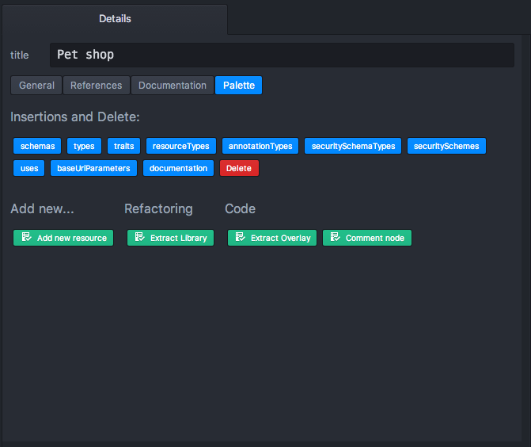
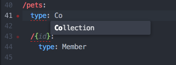
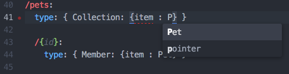
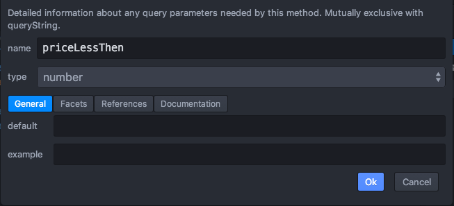
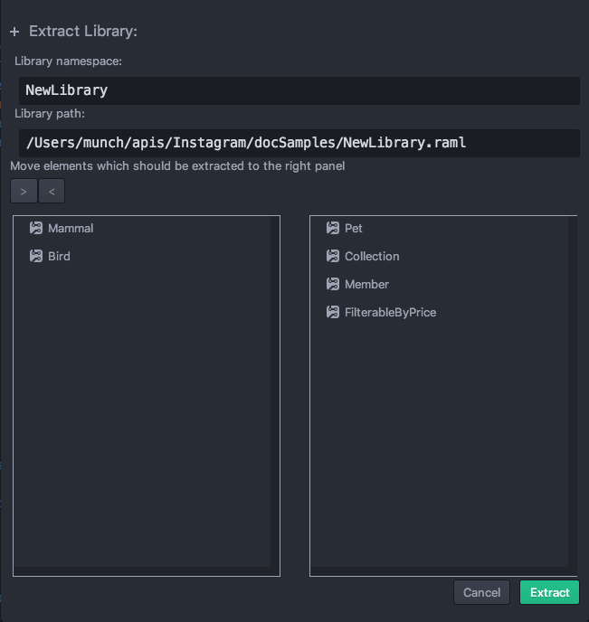

- Getting Started
- Code Completion
- General API Workbench Functionality
- Navigation
- Outline and Details
- Validation
- Wizards
Getting Started
Installation
- Install Atom
- Launch console command:
apm install api-workbench
The installation was successful if the api-workbench package is listed under Atom’s Preferences -> Packages.

API Workbench should also appear in Packages menu:

Basics: Creating simple resource
The tutorial code is evolving across the sections. If the section starts with a suggestion to modify the code and does not contain code previous state, check the previous section.
Your first RAML API
Let’s start by creating an empty project and RAML file. Select File -> Add Project Folder … to choose an existing folder inside your filesystem (or create new one).
All files you will create from here on will be saved in this folder. Press Open. As you can see, Atom adds a new project folder on your left side panel. In that panel, right-click on the project name and select New File.

Type in the following file name Shop.raml.

Now you can start to type in, for example, #%RAML 1.0 to indicate that the document is a RAML file and start coding. The intention behind the API Workbench is not only to give RAML developers a design environment they are used to, but also to make the design of your RAML code even easier.
Therefore, the API Workbench includes dialog-based helpers that can be used to not even touch any RAML code. For example, creating the first lines of you API is as easy as the following. Remove any existing content from the previous steps, right-click on an empty space inside the RAML editor and choose Add New… -> Create new API.

And thats it. Congratulation, you have just defined your first API.
Before we head to the next section, we mentioned that the API Workbench provides a dialogs to help people with RAML. We had to do several steps for creating that first API and I promise you there is an even easier way to do the same. Choose Packages -> Api Workbench -> Create RAML Project from the top-level menu in Atom.

Select a project location, enable Use RAML 1.0 and disable the last two options. The input should look like the image below:

After you press Create, Atom opens a new instance with all the details. So you have got the same project structure and content as before, but with a single click.
Lets start adding resources and methods to our Pet shop example.
Adding resource and methods
The Details pane in the bottom-right allows editing properties without coding. If you can’t see that pane, active it via Packages -> API Workbench -> Open RAML Editor Tools.
The Palette tab of the Details pane contains very useful actions that change depending on the context inside the RAML editor. Right now it shows actions to add new resources or schemas, and more (see image below).

The Add new… category usually contains wizard like dialogs that help adding children to a current element. The same actions are usually available though the context menu (right-click) inside the editor.
It is important to have the element selected in order to see its actions. At the moment, we have selected the root of your API. To add a new resource, click on Add new resource and a dialog pops up.

Enter /pets into the resource URI field and select get and post methods. By pressing Ok, the API Workbench generates the following code:
#%RAML 1.0title: Pet shopversion: 1baseUri: /shop/pets:get:post:
A resource /pets has been generated with two empty methods. Let’s fill them with information about in-coming and out-coming data.
Filling method bodies and responses
Set focus on get: inside the /pets resource to make the Details pane display the available actions in the Palette tab.
There are two different actions we can use to append a response to our method. Either you simple click on responses inside the Insertions and Delete section (the simple way) or you use Create new response inside the Add new… section. The latter opens the following dialog:

Lets use that to simple add a response property with 200 code to the get: method. Simple press Ok inside the dialog and the API Workbench generates the code automatically.
#%RAML 1.0title: Pet shopversion: 1baseUri: /shop/pets:get:responses:200:post:
To add a response body, make sure the focus is on 200: and choose Create new Response Body out of the available actions. In that dialog, simple press Ok and the following will be generated:
#%RAML 1.0title: Pet shopversion: 1baseUri: /shop/pets:get:responses:200:body:application/json:post:
Now lets add a body to post. Set your focus and choose Create new body from the palette and keep the defaults by pressing Ok. That generates the following content:
#%RAML 1.0title: Pet shopversion: 1baseUri: /shop/pets:get:responses:200:post:body:application/json:
Congratulation. You just created a basic structure for your API without writing any code. Although these dialogs are very helpful, you can still write code with a lot of help provided by code completion inside the editor.
Adding sub-resource
We described in which format you can post a new pet and in which format a collection of pets are returned back. To have a complete CRUD (Create Read Update Delete) functionality, we also need a way to modify a member inside a collection as well as deleting one. Lets add a sub-resource for that.
Let’s add a sub-resource for that.
Click on a /pet resource and activate Add new resource action from Palette.
Enter /{id} as a resource URL. Notice that the parent resource URL is mentioned before the current resource URL. Select put and delete methods.

You should get the following code:
#%RAML 1.0title: Pet shopversion: 1baseUri: /shop/pets:get:responses:200:body:application/json:post:body:application/json:/{id}:put:delete:
Now add a body to put and a response to delete by selecting them and activating appropriate palette actions as described in the previous section.
The result should look like following:
#%RAML 1.0title: Pet shopversion: 1baseUri: /shop/pets:get:responses:200:body:application/json:post:body:application/json:/{id}:put:body:application/json:delete:responses:204:
Adding examples and types
We have described the input and output data of our methods, but not very precisely. For now, we only state that those methods use application/json media type. But what is inside that JSON?
Let’s provide that data for post method.
Put cursor in the end of application/json: line inside post method, press Enter to start a new line and start typing “t” character. type key is suggested. Pressing Enter will insert the whole type: code for you. Notice that each completion proposal has its description in the bottom of the popup.

Finish typing the following code:
type: objectproperties:name: stringkind: stringprice: number
Notice that object, properties, string, and number are suggested automatically by code completion while you are typing. Notice that this is not the case for name, kind, and price as these are custom keys.
The result should look like the following:
#%RAML 1.0title: Pet shopversion: 1baseUri: /shop/pets:get:responses:200:body:application/json:post:body:application/json:type: objectproperties:name: stringkind: stringprice: number/{id}:put:body:application/json:delete:responses:204:
We just specified that the post method will return a JSON response containing 3 fields.
Let’s add an example. Copy-paste the following and put (with correct indentation) into the code:
example: |{"name": "Snoopy","kind": "Mammal","price": 100}
The result should look like this:
#%RAML 1.0title: Pet shopversion: 1baseUri: /shop/pets:get:responses:200:body:application/json:post:body:application/json:type: objectproperties:name: stringkind: stringprice: numberexample: |{"name": "Snoopy","kind": "Mammal","price": 100}/{id}:put:body:application/json:delete:responses:204:
Now let’s temporarily change price to priceDDD. As you can see, validator checks the example and complaints that example does not match the properties:

The put method body should accept the same properties in its body. The get method should return an array of such objects.
In order to reuse the properties already entered, let’s move these to a Pet type.
Put the cursor above /pets resource with a zero indent and start typing “ty”, types: will be suggested. Enter the Pet type name at the next line and finish typing the type properties in the same syntax as inside the application/json: node of post method.
Remove properties description from post method, instead put type: Pet inside.
Notice that Pet type name was suggested by completion during the type.
The result should look like this:
#%RAML 1.0title: Pet shopversion: 1baseUri: /shoptypes:Pet:properties:name: stringkind: stringprice: number/pets:get:responses:200:body:application/json:post:body:application/json:type: Petexample: |{"name2": "Snoopy","kind": "Mammal","price": 100}/{id}:put:body:application/json:delete:responses:204:
Notice that the example is still flagged by the validation. This means that moving the type still leaves it recognizable by validation.
Example can be moved to a type too. But this time let’s use YAML syntax instead of the JSON syntax.
Put the cursor at the end of price: number line, press Enter to start a new line, Backspace to set the indent at the same level as properties: and start typing “ex”. example: key is suggested by completion engine. Now start typing “na” and see name property being suggested. This information comes from the class definition.

Finish typing the example, so the result looks like this:
#%RAML 1.0title: Pet shopversion: 1baseUri: /shoptypes:Pet:properties:name: stringkind: stringprice: numberexample:name: "Snoopy"kind: "Mammal"price: 100/pets:get:responses:200:body:application/json:post:body:application/json:type: Pet/{id}:put:body:application/json:delete:responses:204:
Notice that each time you move cursor and put it on a node in the editor, this node is automatically revealed in the outline tree.

And node details are displayed in the Details pane. Besides the Palette tab it also has other useful tabs, for example, the General tab allows setting types.

Add Pet type to the put method and Pet[] type to the get method via General tab of Details pane. [] portion means an array of Pets and should be typed manually.
Finally, we have:
#%RAML 1.0title: Pet shopversion: 1baseUri: /shoptypes:Pet:properties:name: stringkind: stringprice: numberexample:name: "Snoopy"kind: "Mammal"price: 100/pets:get:responses:200:body:application/json:type: Pet[]post:body:application/json:type: Pet/{id}:put:body:application/json:type: Petdelete:responses:204:
The same data we entered in a Pet type was reused in three places, and each time we want to reference the class it is suggested by auto-completion or listed in an appropriate input of Details.
Creating Resource Type
In the previous section we created the collection of pets.
What if we want to add more collections? All the collections share the same attributes: they have two resources, the first one has get and post methods using collection item type (Pet in our case), and the second resource is responsible for a single collection member and has put and delete methods.
Let’s create resource types to reuse this structure in the new collections.
Extracting resource type
Put cursor at /pets resource, find Extract resource type action in Refactoring section of Palette tab in Details, or in context menu and activate the action.
Type Collection name of the new resource type, move get and post methods from left pane to the right pane and press Extract :

The result looks like this:
#%RAML 1.0title: Pet shopversion: 1baseUri: /shoptypes:Pet:properties:name: stringkind: stringprice: numberexample:name: "Snoopy"kind: "Mammal"price: 100resourceTypes:Collection:get:responses:200:body:application/json:type: Pet[]post:body:application/json:type: Pet/pets:type: Collection/{id}:put:body:application/json:type: Petdelete:responses:204:
Resource type was moved down to make the sample more readable.
Repeat the procedure for /{id} resource:

Use Member as a name of resource type and move all methods from left to right.
Following is the code:
#%RAML 1.0title: Pet shopversion: 1baseUri: /shoptypes:Pet:properties:name: stringkind: stringprice: numberexample:name: "Snoopy"kind: "Mammal"price: 100resourceTypes:Collection:get:responses:200:body:application/json:type: Pet[]post:body:application/json:type: PetMember:put:body:application/json:type: Petdelete:responses:204:/pets:type: Collection/{id}:type: Member
Adding resource type parameters
So any resource can now use its type property to reference the newly created resource types and gain the appropriate methods.
But are the potential new collections going to always be the collections of pets and thus be using Pet type? Probably not.
Let’s make our resource types more reusable by making the collection item type to be a parameter.
Replace Pet word inside both resource types with <<item>> :
#%RAML 1.0title: Pet shopversion: 1baseUri: /shoptypes:Pet:properties:name: stringkind: stringprice: numberexample:name: "Snoopy"kind: "Mammal"price: 100resourceTypes:Collection:get:responses:200:body:application/json:type: <<item>>[]post:body:application/json:type: <<item>>Member:put:body:application/json:type: <<item>>delete:responses:204:/pets:type: Collection/{id}:type: Member
As you may have noticed, both /pets and /{id} resources are now marked with validation as missing the required item parameter:

Let’s specify item value for each resource:
For /pet resource delete the Collection word in a type reference and start typing “Co” again.
Collection is suggested, again:

But this time accepting the suggestion will insert a more complicated code:
{ Collection: {item : } }
Repeat the procedure for the Member resource type:
{ Member: {item : } }
And enter the item parameter value: Pet for both cases:
{ Collection: {item : Pet} }
Note that Pet is suggested by completion:

The result should look like this:
#%RAML 1.0title: Pet shopversion: 1baseUri: /shoptypes:Pet:properties:name: stringkind: stringprice: numberexample:name: "Snoopy"kind: "Mammal"price: 100resourceTypes:Collection:get:responses:200:body:application/json:type: <<item>>[]post:body:application/json:type: <<item>>Member:put:body:application/json:type: <<item>>delete:responses:204:/pets:type: { Collection: {item: Pet} }/{id}:type: { Member: {item : Pet} }
Now the validation system is quiet, and /pets and /{id} resources function properly, and our Collection and Member resource types can be reused in other resources with a different member item type.
More parameters can be added to resource types if needed.
Method parameters and Traits
In the previous section we made /pets resource to have its methods set in Collection resource type.
But what if we want, for example, the get method to also have some query parameters, which are not defined in the resource type?
We can add the method to /pets resource directly, too, and both declarations will be merged.
Put cursor at /pets resource and activate Add new method action from Palette and press Ok in the dialog, or simply type get: under /pets resource manually.

The result should look like the following:
/pets:type: { Collection: {item: Pet} }get:
Now put the cursor at get: and activate Create new query parameter action.
Fill in priceLessThen parameter name and number type and press Ok.

In the same way create another query parameter priceLessThen of number type, and type in petKind parameter, but having enum: [bird, mammal] instead of type:.
Results should look like this:
#%RAML 1.0title: Pet shopversion: 1baseUri: /shoptypes:Pet:properties:name: stringkind: stringprice: numberexample:name: "Snoopy"kind: "Mammal"price: 100resourceTypes:Collection:get:responses:200:body:application/json:type: <<item>>[]post:body:application/json:type: <<item>>Member:put:body:application/json:type: <<item>>delete:responses:204:/pets:type: { Collection: {item: Pet} }get:queryParameters:priceLessThen:type: numberpriceMoreThen:type: numberpetKind:enum: [bird, mammal]/{id}:type: { Member: {item : Pet} }
Now our method has some query parameters, and two of those: priceLessThen and priceMoreThen look like a separate piece of declaration, basically they set a method to be filterable by price.
Lets extract this functionality to be reusable for the other methods.
Put cursor at get: method of /pets resource and activate Extract trait action from Palette or context menu.

Enter FilterableByPrice trait name and move priceLessThen and priceMoreThen parameters from left to right. Press Extract button.
The results are the following:
#%RAML 1.0title: Pet shopversion: 1baseUri: /shoptypes:Pet:properties:name: stringkind: stringprice: numberexample:name: "Snoopy"kind: "Mammal"price: 100resourceTypes:Collection:get:responses:200:body:application/json:type: <<item>>[]post:body:application/json:type: <<item>>Member:put:body:application/json:type: <<item>>delete:responses:204:traits:FilterableByPrice:queryParameters:priceLessThen?:type: numberpriceMoreThen?:type: number/pets:type: { Collection: {item: Pet} }get:is: FilterableByPricequeryParameters:petKind:enum: [bird, mammal]/{id}:type: { Member: {item : Pet} }
Generated trait is moved down for better readability.
is: FilterableByPrice
This line declares that the get method now gets its parameters from the newly created FilterableByPrice trait.
Many other method properties can be moved to the trait too. We can now reuse the trait in other methods.
Reusing traits and resource types, libraries
Adding more types
We created two resource types and a trait in hope to reuse them later.
Let’s actually do it.
First, let’s add two more subtypes of a Pet type: Bird and Mammal.
Copy-paste the code, or create the types via Palette and typing as described in the previous sections:
types:Pet:properties:name: stringkind: stringprice: numberexample:name: "Snoopy"kind: "Mammal"price: 100Mammal:type: Petproperties:color:enum: [White, Black, Colored]Bird:type: Petproperties:wingLength: number
After adding these types we recognize that actually all pets have a color, not just mammals. Lets move color property from a Mammal subtype to its Pet supertype.
Put cursor at Mammal type and activate Pull up action from Palette or context menu.

Move color property from left to right, select Pet supertype target and press Extract button.
The results are the following:
#%RAML 1.0title: Pet shopversion: 1baseUri: /shoptypes:Pet:properties:name: stringkind: stringprice: numbercolor:enum:- White- Black- Coloredexample:name: "Snoopy"kind: "Mammal"price: 100Mammal:type: PetBird:type: Petproperties:wingLength: numberresourceTypes:Collection:get:responses:200:body:application/json:type: <<item>>[]post:body:application/json:type: <<item>>Member:put:body:application/json:type: <<item>>delete:responses:204:traits:FilterableByPrice:queryParameters:priceLessThen?:type: numberpriceMoreThen?:type: number/pets:type: { Collection: {item: Pet} }get:is: FilterableByPricequeryParameters:petKind:enum: [bird, mammal]/{id}:type: { Member: {item : Pet} }
Notice that color enum is now located in a Pet type, so both Bird and Mammal have it.
Also notice that extracted enum syntax is a bit different. The syntax we used before was a shortcut for the syntax which the Pull Up refactoring generated.
Adding more resources
We already learned to create resources, so let’s just copy-paste the following code:
/birds:type: { Collection: {item: Bird} }get:is: FilterableByPrice/{id}:type: { Member: {item : Bird} }/mammals:type: { Collection: {item: Mammal} }get:is: FilterableByPrice/{id}:type: { Member: {item : Mammal} }
As you can see, here we created two collections reusing both resource types, specifying Bird and Mammal as collection items; and we reuse FilterableByPrice to add price filtering to get methods.
It would be also nice to add
discriminator: kind
to a Pet type so that its kind property will be used by the clients when accessing the general /pets collection to distinguish a pet between birds and mammals.
Completion will suggest both discriminator and kind when typing:

The final result will look like this:
#%RAML 1.0title: Pet shopversion: 1baseUri: /shoptypes:Pet:discriminator: kindproperties:name: stringkind: stringprice: numbercolor:enum:- White- Black- Coloredexample:name: "Snoopy"kind: "Mammal"price: 100color: WhiteMammal:type: PetBird:type: Petproperties:wingLength: numberresourceTypes:Collection:get:responses:200:body:application/json:type: <<item>>[]post:body:application/json:type: <<item>>Member:put:body:application/json:type: <<item>>delete:responses:204:traits:FilterableByPrice:queryParameters:priceLessThen?:type: numberpriceMoreThen?:type: number/pets:type: { Collection: {item: Pet} }get:is: FilterableByPricequeryParameters:petKind:enum: [bird, mammal]/{id}:type: { Member: {item : Pet} }/birds:type: { Collection: {item: Bird} }get:is: FilterableByPrice/{id}:type: { Member: {item : Bird} }/mammals:type: { Collection: {item: Mammal} }get:is: FilterableByPrice/{id}:type: { Member: {item : Mammal} }
Extracting the library
What if we want to reuse our types, resource types and traits from other RAML files?
In such a case we want to put them into a separate library file, then add uses instruction pointing to that file, assign some namespace to the uses instruction and change all related references in the code to mention that namespace.
Or, better yet, use Extract Library refactoring.
Put cursor somewhere outside of resources, traits etc, for example at title and activate Extract Library action from Palette or context menu.
Move Pet type, Collection and Member resource types, and FilterableByPrice trait from left to right and press Extract.

As a result, current file contains the following code:
#%RAML 1.0title: Pet shopuses:NewLibrary: !include NewLibrary.ramlversion: 1baseUri: /shoptypes:Mammal:type: NewLibrary.PetBird:type: NewLibrary.Petproperties:wingLength: number/pets:type: { NewLibrary.Collection: {item: NewLibrary.Pet} }get:is: NewLibrary.FilterableByPricequeryParameters:petKind:enum: [bird, mammal]/{id}:type: { NewLibrary.Member: {item : NewLibrary.Pet} }/birds:type: { NewLibrary.Collection: {item: Bird} }get:is: NewLibrary.FilterableByPrice/{id}:type: { NewLibrary.Member: {item : Bird} }/mammals:type: { NewLibrary.Collection: {item: Mammal} }get:is: NewLibrary.FilterableByPrice/{id}:type: { NewLibrary.Member: {item : Mammal} }
And the new NewLibrary.raml file located in the same folder contains the moved elements:
#%RAML 1.0 Librarytraits:FilterableByPrice:queryParameters:priceLessThen?:type: numberpriceMoreThen?:type: numberresourceTypes:Collection:get:responses:200:body:application/json:type: <<item>>[]post:body:application/json:type: <<item>>Member:put:body:application/json:type: <<item>>delete:responses:204:types:Pet:discriminator: kindproperties:name: stringkind: stringprice: numbercolor:enum:- White- Black- Coloredexample:name: Snoopykind: Mammalprice: 100color: White
The following instruction in the original file assigns NewLibrary.raml to a NewLibrary namespace.
uses:NewLibrary: !include NewLibrary.raml
So that namespace must be used as a prefix to anything we reuse from the library, like NewLibrary.Pet type.
Now this library can be included into as many other RAML files as needed.
We can also easily navigate between the files. In example, put cursor at
type: NewLibrary.Pet
line inside Bird class and activate Go To Definition action from context menu.

This will automatically open NewLibrary.raml and select Pet class declaration.